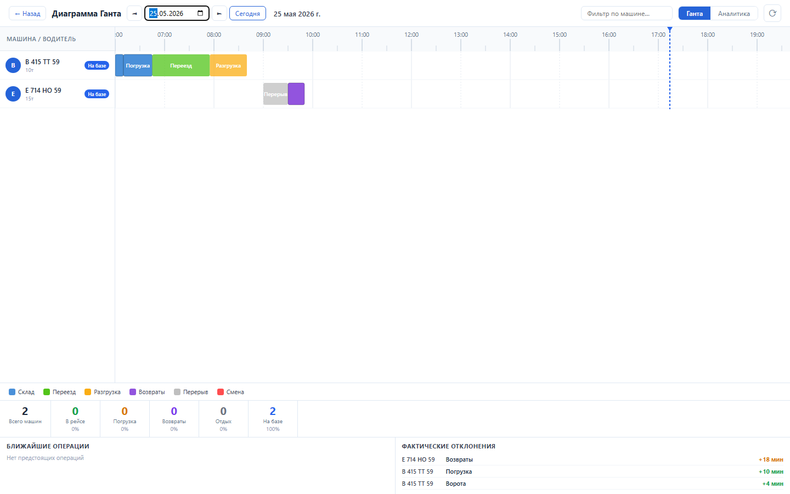
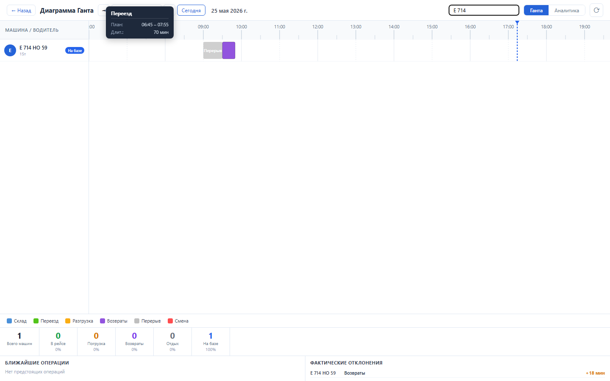
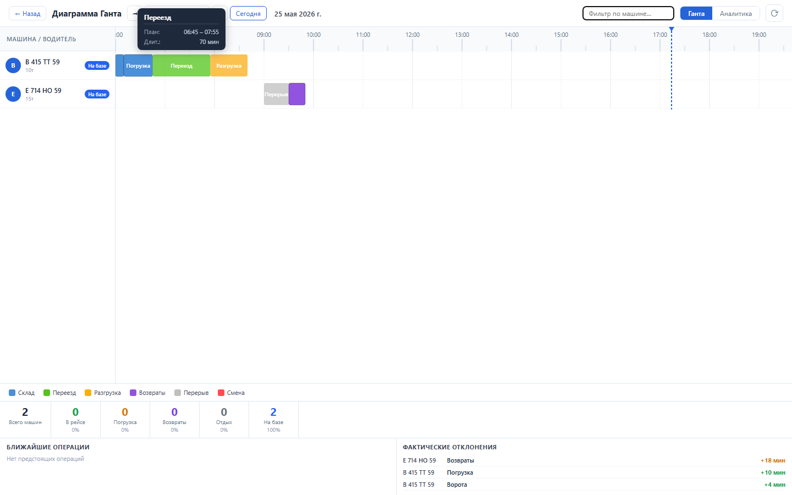

Зачем этот блок
Диаграмма Ганта дает диспетчеру обзор дня: какие машины на базе, какие грузятся, какие уже в рейсе, где есть отклонения и что будет следующим.
Вход
Операции рейсов на выбранную дату, сгруппированные по машинам.
Операции рейсов на выбранную дату, сгруппированные по машинам.
Процесс
Просмотр временной шкалы, фильтр машин, hover-подсказки, дата-навигация и контроль отклонений.
Просмотр временной шкалы, фильтр машин, hover-подсказки, дата-навигация и контроль отклонений.
Результат
Единая картина загрузки транспорта и быстрый переход к проблемным рейсам.
Единая картина загрузки транспорта и быстрый переход к проблемным рейсам.
Структура данных
| Уровень | Поля | Зачем нужно |
|---|---|---|
| Машина | vehicle_id, vehicle_num, vehicle_type | Строка Ганта и статус транспорта. |
| Операция | operation_code, plan_start, plan_end, fact_start, fact_end, delta_min | Цветной блок на временной шкале. |
| Сводка | статусы машин, ближайшие операции, отклонения | Оперативное управление сменой. |
Как работать



Бизнес-процессы
- Утренний контроль выпуска: открыть дату и проверить, что все машины имеют плановые операции.
- Мониторинг смены: смотреть текущие статусы, ближайшие операции и машины в рейсе.
- Работа с отклонениями: найти операцию с дельтой, открыть карточку рейса и принять диспетчерское решение.
- Фокус по машине: отфильтровать госномер и проверить цепочку одной машины.
Результат проверки
Sprint 12 закрыт функционально: backend tests 12 passed, UI smoke passed, load NFR passed. Проверены загрузка Ганта, легенда, сводка, hover tooltip, фильтр машин, дата-навигация и панель отклонений.